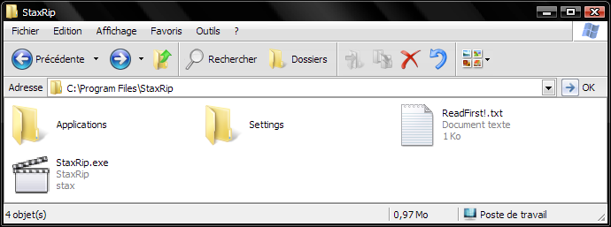
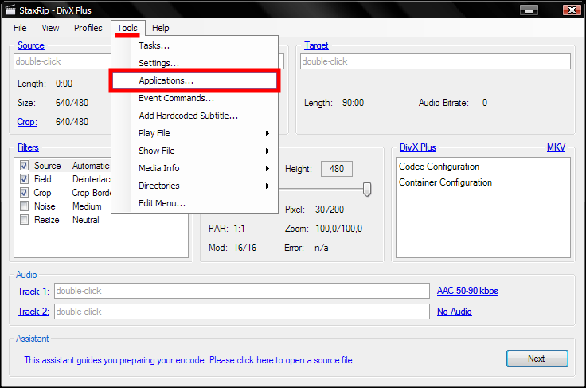
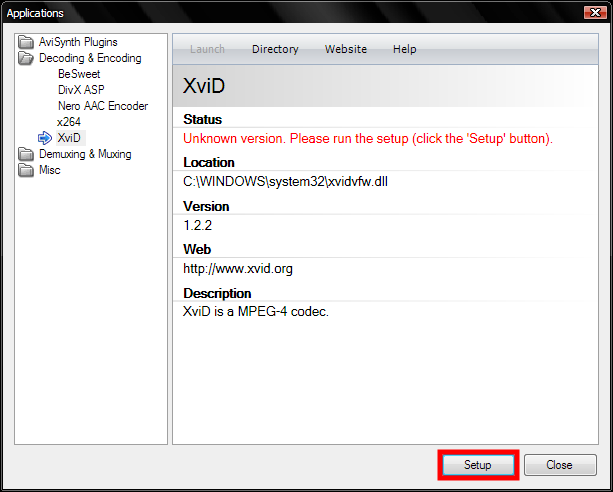
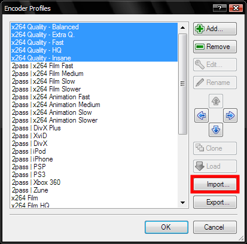
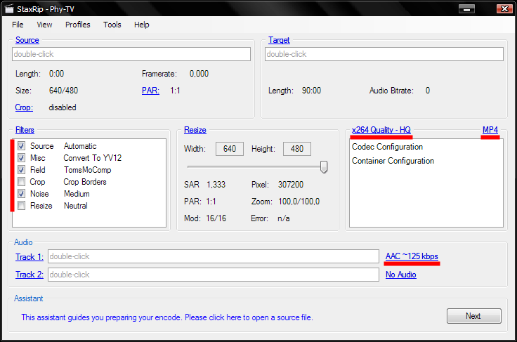
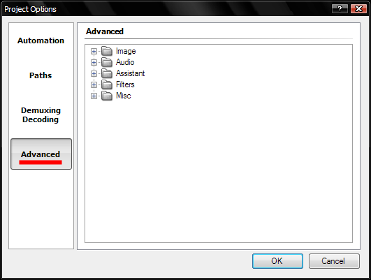
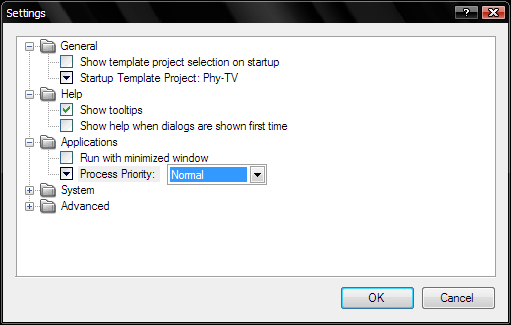

J'insiste ici sur le fait que StaxRip est un logiciel pour Windows. L'incontournable logiciel de filtrage Avisynth n'étant disponible que sous Windows (la future version 3 s'étendra cependant à Linux/Mac), il faut malheureusement oublier la compression vidéo sous Linux/Mac.
Téléchargez tout d'abord la dernière version de StaxRip ici.
Pour décompresser ce .7z, vous aurez besoin de 7-Zip, disponible ici.
Ceci fait, sur l'archive de StaxRip faites Clic droit > 7-Zip > Extraire vers "StaxRip_...\", mais vous pouvez l'extraire n'importe où ailleurs ça n'a aucune importance.
Dans le dossier fraîchement créé, le fichier ReadFirst! vous dit que StaxRip a besoin de Microsoft .NET Framework 3.5 pour fonctionner. Suivez le lien si vous ne l'avez pas encore (vous pouvez vérifier dans la liste des programmes installés du Panneau de Configuration s'il est installé).
Au démarrage, StaxRip vous demande où stocker ses paramètres, choisissez Custom, trouvez le dossier de StaxRip et créez-y un dossier Settings pour y stocker ces paramètres.

Sur l'écran de base de StaxRip, allez dans le menu Tools > Applications...

Le menu des mises à jour s'affiche, cliquez sur Setup et laissez-vous guider. Lors de l'installation de Avisynth, l'installation Minimale suffira.

De retour à l'écran de base de StaxRip, nous allons à présent créer un projet tout prêt qui n'attend que le film à encoder pour que la compression des films soit la plus rapide à l'avenir.
Je vous ai préparé une archive contenant les fichiers que je vais vous demander d'importer. Décompressez-la et gardez-la de côté, vous pourrez la supprimer à la fin de l'installation. L'archive est disponible ici.
Commençons par l'encodage vidéo. Allez au menu Profiles > Encoder > Edit Profiles...
Là, cliquez sur Import... et importez les fichiers en "x264 Quality - [...].srp". Dans le menu Profiles > Encoder, vous pouvez à présent sélectionner un des profils en x264 Quality qui apparaîtra alors dans l'écran de base de StaxRip.

J'ai créé ces profils à partir des profils "Unrestricted 1pass Const. Quality" fournis dans le didacticiel sur MeGUI, et qui viennent initialement des profils de Sharktooth (voir liens plus bas). Tous ces profils donneront la même qualité en sortie mais les plus lents donneront une taille de fichier plus faible. L'ordre du plus rapide au plus lent est : Fast, Balanced, HQ, Extra Q et Insane. HQ est un bon compromis que je vous recommande.
Continuons avec l'encodage audio. Allez au menu Profiles > Audio 1 > Edit Profiles... et importez de même le fichier "AAC ~125 kbps.srp". N'oubliez pas de le sélectionner pour qu'il apparaisse sur l'écran de base de StaxRip.
Ce profil utilise une compression à qualité constante à 0,4.
Passons aux filtres appliqués à la vidéo avant compression. Allez au menu Profiles > Filter Setup > Edit Profiles... et importez le fichier "Filtres Phy-TV.srp".
Le choix de ces filtres est aussi tiré du didacticiel sur MeGUI.
Terminons avec le conteneur qui va réunir l'audio et la vidéo. Cliquez dans le menu Profiles > Container > MP4 (consoles, handhelds), c'est tout !
Le muxer réunissant l'audio et la vidéo dans StaxRip produit des fichiers MP4 pouvant directement être lus en streaming par Internet (grâce au moov atom qui doit être présent au début du fichier), contrairement à MeGUI qui doit passer par un muxer externe, YAMB.

À présent, allez au menu View > Options... et directement dans l'onglet Advanced.
Dans Assistant, décochez les Remind To Cut, Do Compressibility Check et Set Filters.
Dans Misc, cochez Delete temp files directory pour ne pas conserver les fichiers intermédiaires et complètement inutiles de chaque compression.

Pour enregistrer ce projet et pouvoir en faire le projet par défaut, allez dans le menu File > Save Project As Template... et nommez-le Phy-TV.
Terminons avec les options du logiciel, allez dans Tools > Settings...
Dans General, décochez Show template project selection on startup et désignez Phy-TV comme Startup Template Project.
Dans Help, vous pouvez décocher Show help when dialogs are show first time si comme moi ces fenêtres d'explication vous emm...
Enfin dans Applications, je vous conseille de décocher Run with minimized window pour éviter les situations où une fenêtre réduite attend notre approbation indéfiniment alors qu'on ne l'a pas remarquée. Fixez aussi Process Priority à Normal (jamais au delà !) pour accélérer les compressions.
